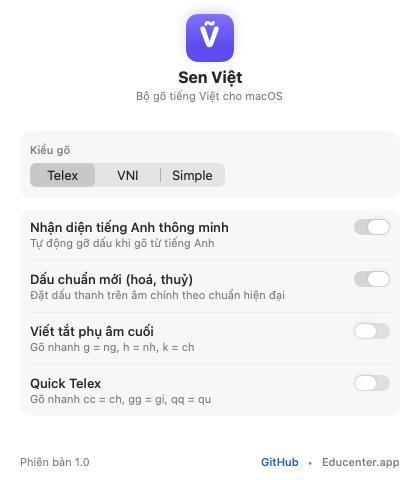

Sen Việt
Bộ gõ tiếng Việt Native cho macOS.
Khởi nguồn từ mong muốn một trải nghiệm gõ tự nhiên, an toàn và hòa hợp với macOS. Không cần quyền Trợ năng (Accessibility) hay CGEventTap, bảo toàn ngữ cảnh hoàn tác (Cmd + Z) và vận hành hoàn toàn offline.
Dành cho Terminal: Tự động tải, cài đặt gói PKG và mở cài đặt bàn phím.
3 Bước Kích Hoạt Đơn Giản Sau Khi Cài Đặt
Trải nghiệm gõ trực tiếp
Thử gõ Telex hoặc từ tiếng Anh ngay trên trình duyệt để cảm nhận tốc độ phản hồi tức thì.
Bảng Cài đặt Tinh giản, Đậm chất macOS
Không cửa sổ cồng kềnh, không banner quảng cáo, không thiết lập thừa thãi. Cửa sổ cài đặt của Sen Việt được đóng gói dưới dạng thẻ Inspector 380×420px gọn gàng, tự động thích ứng Dark / Light mode:
- Chọn kiểu gõ tức thì: Chuyển đổi mượt mà giữa Telex và VNI.
- Chuẩn chính tả mới: Tùy chọn bỏ dấu kiểu mới (hoà/hòa) và viết tắt vần cuối.
- Smart Bilingual: Tự động nhận diện và khôi phục tiếng Anh khi gõ hỗn hợp.

4 Điểm Nhấn Kiến Trúc Cốt Lõi
Thiết kế tinh gọn, an toàn và hòa nhập tự nhiên vào hệ thống macOS.
Chuẩn Apple Native — Không cần quyền can thiệp hệ thống
Tích hợp trực tiếp qua giao thức InputMethodKit. Vận hành an toàn như một nguồn nhập liệu tiêu chuẩn của hệ điều hành mà không cần cấp quyền Trợ năng (Accessibility) hay dùng CGEventTap.
Bảo toàn ngữ cảnh — Giữ nguyên lịch sử Undo (Cmd + Z)
Cơ chế thay thế trực tiếp ký tự tại con trỏ (directReplacement) giúp các thao tác hoàn tác (Cmd + Z) hoạt động chuẩn xác trong VS Code, Cursor, Word, Notion và các công cụ thiết kế.
Phản hồi tự nhiên trong ứng dụng Chat & Trình duyệt
Được tối ưu hóa cho hành vi con trỏ khi chuyển cửa sổ giữa trình duyệt và các ứng dụng nhắn tin (Telegram, Zalo, Slack, Messenger), bảo đảm các ký tự đầu tiên luôn nhận diện đúng dấu.
Nhận diện từ tiếng Anh thông minh (Smart Bilingual)
Tự động giữ nguyên các từ tiếng Anh quen thuộc (wifi, apple, system) khi gõ văn bản kỹ thuật hỗn hợp mà không cần thao tác chuyển bàn phím thủ công.
VieLotus Lab — Cùng hoàn thiện bộ gõ cho mọi ứng dụng
Hệ sinh thái phần mềm trên macOS vô cùng phong phú: từ các ứng dụng AppKit truyền thống, trình duyệt web, các bộ công cụ Electron (VS Code, Cursor, Slack) cho đến Office và Terminal. Không một giải pháp đơn lẻ nào có thể hoàn hảo ngay từ đầu trên mọi ô nhập liệu. VieLotus Lab là không gian đồng hành mở để người dùng và cộng đồng theo dõi trực tiếp nhịp phím, bắt các tình huống góc và cùng đóng góp để bộ gõ ngày càng hoàn thiện hơn.
Theo dõi nhịp phím trên ứng dụng thực tế
Bắt nhịp biến đổi văn bản và trạng thái con trỏ thời gian thực trên Cursor, VS Code, Word, Chrome, Slack, Terminal.
Bảo vệ quyền riêng tư (Privacy by Design)
Chỉ ghi nhận lượng ký tự tăng/giảm trong phiên thử nghiệm. Tuyệt đối không lưu nội dung tài liệu có sẵn và không ghi lại ký tự bị xóa.
Xuất gói chẩn đoán khép kín
Xem trước, tự do biên tập và xuất báo cáo Markdown hoặc gói JSON chuẩn (tách rõ phiên bản Lab và IME đang chạy) để đính kèm GitHub Issue.
- Tải và mở VieLotus Lab
- Chọn app mục tiêu & gõ chuỗi phím thử nghiệm
- Bấm Xem trước & Báo cáo (Markdown / JSON)
- Gửi Issue lên GitHub để cùng hoàn thiện
Bảng So sánh Trực quan
So sánh thực tế giữa Sen Việt với bộ gõ mặc định của macOS và các công cụ dùng quyền Accessibility cũ.
| Tiêu chí trải nghiệm | macOS Mặc định | Bộ gõ Accessibility cũ | Sen Việt (VieLotusIM) |
|---|---|---|---|
| Quyền Trợ năng (Accessibility) | Không cần | Bắt buộc cấp quyền | Không cần quyền |
| Gạch chân nhấp nháy CJK | Có (rất khó chịu) | Không | Không gạch chân |
| Bảo toàn Undo (Cmd + Z) | Bảo toàn | Bị phá hỏng | Giữ trọn 100% |
| Gõ trong khung Chat (Zalo, Slack) | Hay dính chữ | Tương đối | Tức thì từ phím đầu |
| Tự khôi phục từ tiếng Anh | Không hỗ trợ | Bán tự động | Smart Bilingual tự động |
| Lưu vết phím gõ (Keylogging) | Telemetry hệ thống | Tùy cấu hình | Zero-Logging tuyệt đối |
| Giấy phép phát hành | Đóng mã độc quyền | Nhiều giấy phép | GPLv3 License |
Kiến trúc Tách lớp Độc lập
Tách bạch nghiêm ngặt giữa tầng giao tiếp hệ điều hành (Swift) và lõi thuật toán tiếng Việt (Pure Swift).
┌──────────────────────────────────────────────────────────────┐
│ LỚP ĐIỀU KHIỂN: Swift Native (InputMethodKit) │
│ • IMKServer quản lý kết nối Input Source hệ thống │
│ • VieLotusIMController điều phối sự kiện bàn phím │
│ • Giao tiếp với Client qua giao thức NSTextInputClient │
└──────────────────────────────┬───────────────────────────────┘
│ (Gọi trực tiếp Pure Swift)
┌──────────────────────────────┴───────────────────────────────┐
│ LÕI NGỮ ÂM TIẾNG VIỆT: Pure Swift Engine (VieLotusCore) │
│ • Xử lý bảng mã Telex và VNI tốc độ vi giây │
│ • Bỏ dấu chuẩn mới (hoà/hòa), viết tắt vần cuối │
│ • Bộ đệm vòng (Ring Buffer) 32 từ hỗ trợ hoàn tác nhanh │
│ • Nhận diện tiếng Anh thông minh (Smart Bilingual) │
└──────────────────────────────────────────────────────────────┘
Lộ trình Phát triển
Hướng tới hệ sinh thái bộ gõ tiếng Việt hoàn chỉnh cho mọi thiết bị Apple.
macOS Universal Release
Phát hành chính thức bản cài đặt Universal (.dmg & .pkg) cho cả Apple Silicon và Intel.
99.51% Benchmark & VieLotus Lab
Nâng tỷ lệ kiểm thử lên 99.51% với ràng buộc ngữ âm Pure Swift; ra mắt VieLotus Lab chẩn đoán nhịp gõ và xuất gói báo cáo lỗi khép kín.
iOS & Đồng bộ Bảng gõ tắt
Mở rộng bàn phím cho iPhone/iPad dùng chung lõi VieLotusCore và hỗ trợ tùy biến bảng gõ tắt cá nhân hóa.
Dự án Vì Cộng đồng Người dùng Mac Việt Nam
Sen Việt được phát triển phi thương mại theo giấy phép GPLv3. Mọi đóng góp thuật toán, báo lỗi, hoặc ý tưởng cải tiến đều được chào đón nồng nhiệt.
Tham gia Đóng góp trên GitHubMời tác giả ly cà phê
Đồng hành cùng dự án bộ gõ Sen Việt
Sen Việt là dự án mã nguồn mở phi lợi nhuận. Sự ủng hộ của bạn là động lực để tiếp tục cải tiến và phát triển bộ gõ cho hệ sinh thái Apple.